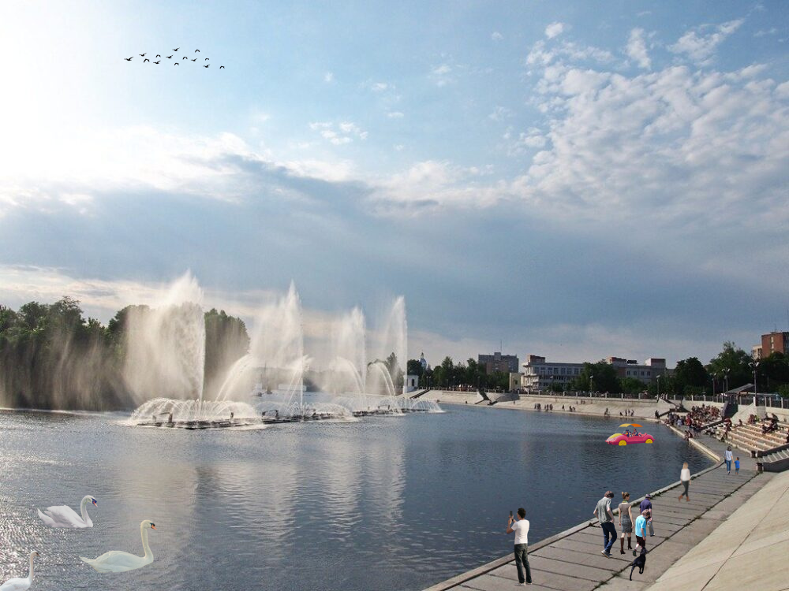
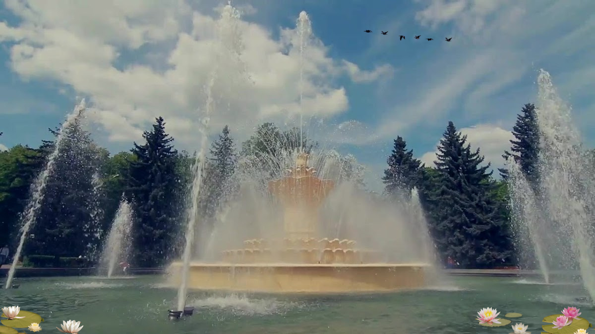
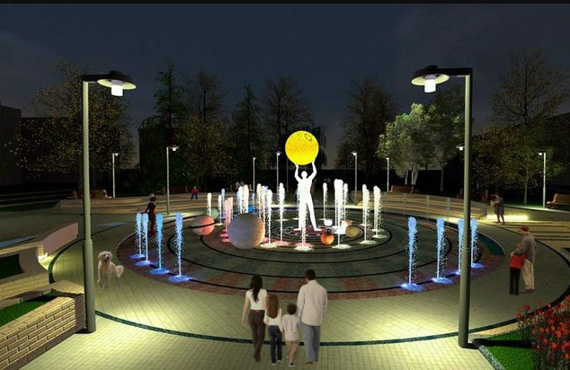
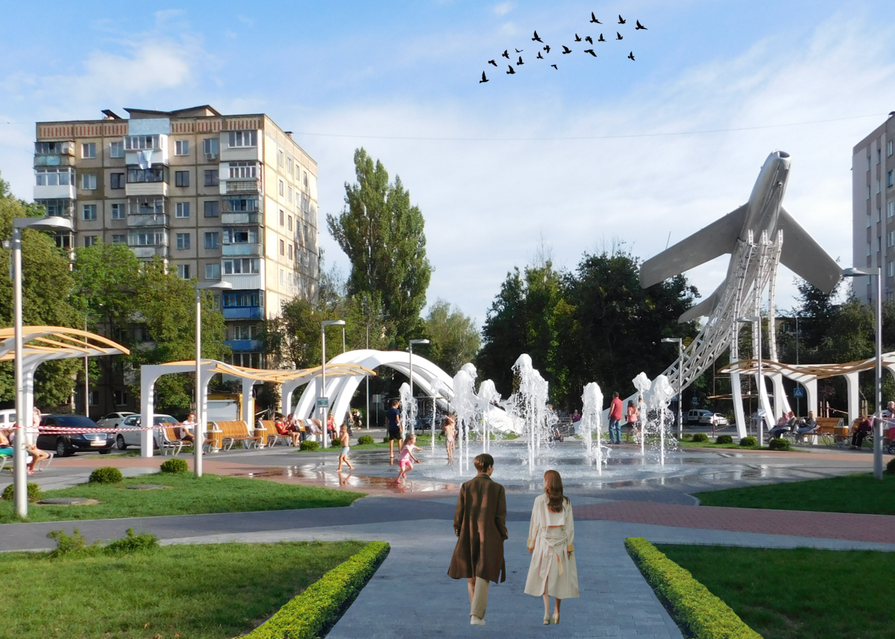
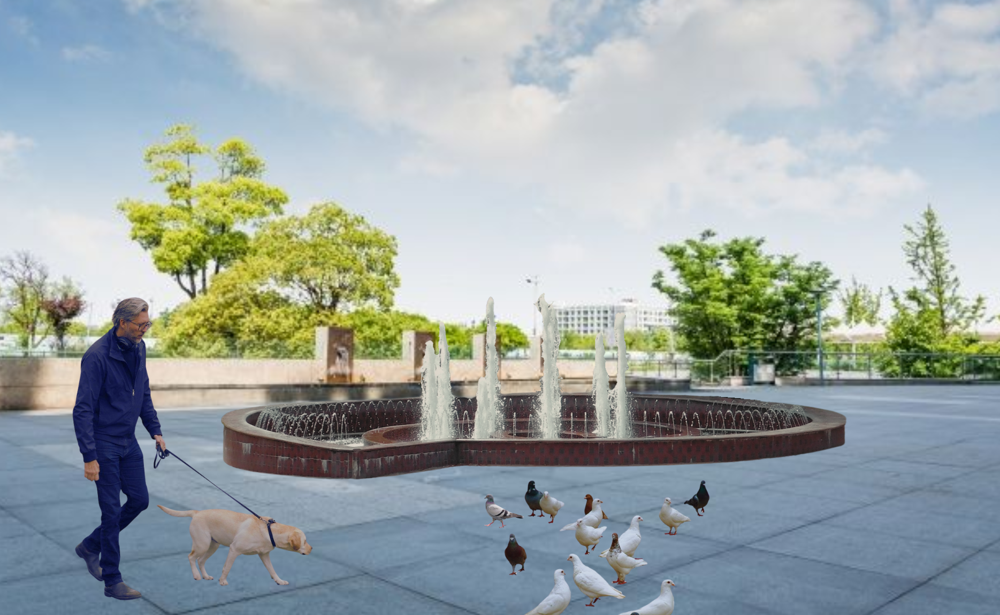

Фонтани – це не просто конструкції з водою, а справжні витвори мистецтва, які надають містам неповторної атмосфери та особливого шарму. Вінниця недарма має репутацію міста фонтанів – від грандіозного світломузичного шоу на річці Південний Буг до затишних водограїв у парках і на площах – кожен із них має власну історію, характер і значення для міського простору. Цей сайт створено для того, щоб познайомити вас із п’ятьма найвідомішими та найкрасивішими фонтанами міста й області, розповісти про їхню історію, архітектурні особливості та пояснити, чому саме вони стали невід’ємною частиною культурного обличчя Вінниччини. Для ілюстрації фонтанів використано авторські фотоколажі.
Один із головних символів Вінниці – це унікальний річковий світломузичний фонтан Roshen. Відкритий 4 вересня 2011 року, він вважається найбільшим у світі фонтаном на відкритій водоймі: його довжина сягає 140 метрів, а висота водяних струменів – до 60 метрів. Завдяки сучасним технологіям шоу на фонтані поєднує музику, світло, лазерні ефекти та 3D-відеопроєкцію на водному екрані, створюючи незабутнє видовище. Сьогодні Roshen – це не лише популярна туристична атракція, а й справжня візитівка міста, яку обов’язково варто побачити на власні очі.
Цей фонтан – один із найстаріших у Вінниці та справжня прикраса центральної частини парку ім. Максима Горького. Розташований на Фонтанній площі, він багато років перебував у напівзруйнованому стані та працював лише у святкові дні. У 2013 році фонтан було ретельно відреставровано, повернувши йому автентичний вигляд і сучасне технічне оснащення. Сьогодні він обладнаний підсвіткою з 70 прожекторів, чотирма потужними насосами та 187 форсунками, які створюють захопливу водну композицію, особливо ефектну у вечірній час.
Сучасний пішохідний фонтан, відкритий 25 травня 2018 року, розташований на перетині проспектів Космонавтів та Юності й став одним із найулюбленіших місць відпочинку вінничан. Площа, на якій знаходиться фонтан, має форму кола, що символізує модель Сонячної системи. У центрі композиції встановлено скульптуру людини з кулею над головою – символ прагнення до знань і руху вперед. Навколо фонтану розміщено зручні лавочки, де мешканці та гості міста можуть насолоджуватися атмосферою та спокоєм.
Пішохідний фонтан є важливою частиною архітектурної композиції площі Костянтина Могилка, розташованої у районі Лісопарку на початку проспекту Космонавтів. Його облаштували під час масштабної реконструкції площі у 2018 році. Фонтан складається із 16 водних струменів, які піднімаються на висоту до 3 метрів, створюючи динамічну й ефектну водну композицію, що приваблює мешканців та гостей міста.
Фонтан «Мушля» – один із трьох фонтанів, розташованих на площі Незалежності у Вінниці. Він знаходиться безпосередньо перед входом до готелю «Поділля» та є популярним місцем зустрічей і відпочинку містян. Під час реконструкції площі у 2013 році фонтан набув своєї характерної спіральної форми, що нагадує морську мушлю. Територія довкола перетворилася на комфортний простір для прогулянок і проведення культурних подій, а ввечері водограй зачаровує гостей міста м’якою підсвіткою.
